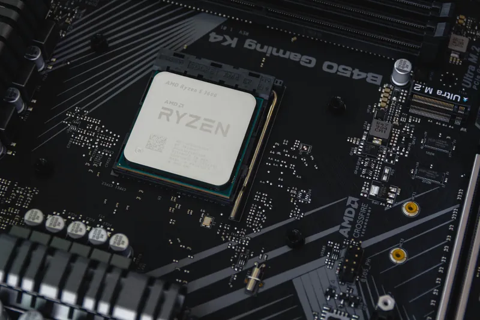

KL House Price Forecasting Web App
A web app to forecast the price per square feet of residential houses in Kuala Lumpur.
Hello world!
SOFTWARE DEVELOPER, DATA SCIENTIST / ANALYST, AI / ML ENGINEER, TECHNICAL PROJECT MANAGER
I am into data science, AI and technologies that enable us to have a better life.
RESUMEPython, R, Microsoft Excel, Tableau, Power BI, SQL.
Scikit-learn, Statsmodels.
Angular, FastAPI, Docker, Kubernetes, Dash and Streamlit web apps.
CI/CD with Git, Azure Pipelines and GitHub Actions.
Comfortable working in an Agile environment and occasional Scrum Master.
Publishing research work as articles in journals.
Giving back to the dev community at GitHub and StackOverflow.
FULL STACK SOFTWARE ENGINEER & DATA SCIENTIST
Currently a full stack software engineer at Ørsted, where I actively research and develop numerical models for design of high voltage cables at offshore wind farms, then deploy them as applications and software products.
Completed Master of Data Science at University of Malaya to gain deeper understanding on Data Science methods.
Originally trained as a mechanical engineer, I designed and fabricated competition robots for ROBOCON Malaysia 2018 and 2019.
Occasionally, I consult and train teams to apply data science, contribute to open-source projects on GitHub and answer questions on StackOverflow.
I am also the first author of a recently published research article titled “Intelligent optimization of a hybrid renewable energy system using an improved flower pollination algorithm” in the International Journal of Environmental Science and Technology.
A web app to forecast the price per square feet of residential houses in Kuala Lumpur.
RPA workflow for customer churn prediction using machine learning models.
Analyzed data science and STEM salaries obtained from Levelsfyi.

Demonstration of parallel and distributed computing with YOLO object detection.
Title: Intelligent optimization of hybrid renewable energy system using an improved flower pollination algorithm
Contributed to the documentation of the fastapi_msal open-source Python package.
Developed and deployed a Python-based traffic analytics dashboard for a client.
Implemented chained callback logic, Docker deployment to Heroku, investigated bugs and wrote docstrings and documentations.
Analyzed English Premier League players' data to help scouts find high potential football talent.
Helping out strangers on GitHub issues i.e. ipywidgets, facebookresearch and dash-core-components as well as on StackOverflow questions.